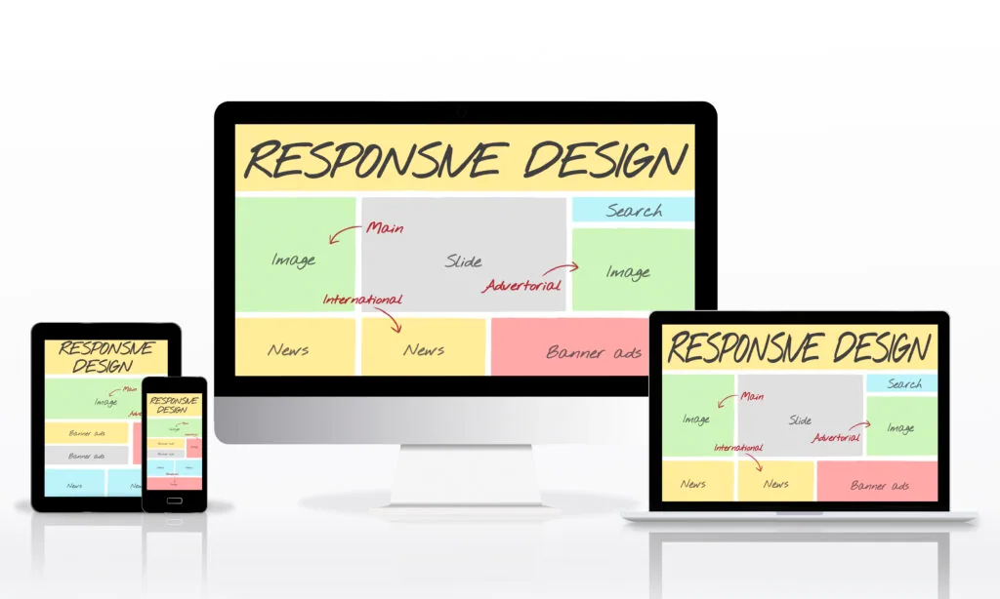
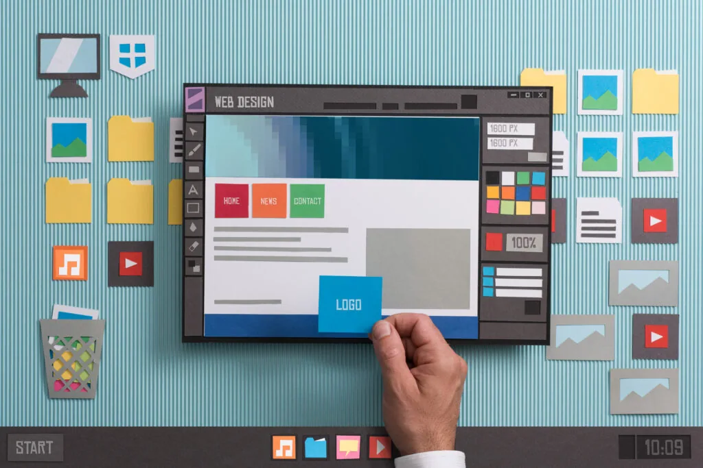

Are you struggling to outrank your competitors on Google? One of the most critical factors that can help you achieve higher rankings is your website’s user experience (UX). A good UX not only helps visitors navigate through your site but also keeps them engaged and satisfied. In this article, we will discuss five best practices that you can implement to improve your website’s UX and rank higher on Google.
Simplify Your Website’s Navigation
Your website’s navigation is the backbone of its user experience. A clear and intuitive navigation menu will help your visitors find what they are looking for quickly and easily. A cluttered and confusing menu, on the other hand, will frustrate your visitors and drive them away.
To simplify your website’s navigation, you should:
- Keep your menu items short and descriptive
- Use a drop-down menu for subcategories
- Avoid using too many menu items
- Use a search bar to help users find specific pages
Use Responsive Web Design

With more and more people browsing the web on their smartphones and tablets, it’s essential to use responsive web design to ensure that your website looks good on any device. A responsive design adapts to the user’s screen size and resolution, making it easy to read and navigate.
To use responsive web design, you should:
- Use a mobile-friendly theme or template
- Test your website on different devices and screen sizes
- Use a responsive layout with flexible grids and images
- Use CSS media queries to adjust the layout for different devices
Use High-Quality Content
High-quality content is essential for a good user experience and higher search engine rankings. Your content should be informative, engaging, and relevant to your target audience. It should also be well-structured with clear headings, subheadings, and paragraphs.
To create high-quality content, you should:
- Research your topic thoroughly
- Use original and unique content
- Use relevant keywords in your content and meta tags
- Write for your audience, not for search engines
Use Visuals to Enhance User Experience

Visuals can enhance your website’s user experience by breaking up text, providing context, and making your content more engaging. Visuals include images, videos, infographics, and diagrams.
To use visuals to enhance your user experience, you should:
- Use high-quality and relevant images
- Use videos to demonstrate products or services
- Use infographics to present data in a visually appealing way
- Use diagrams to explain complex concepts
Conclusion
Improving your website’s UX is essential for higher search engine rankings and more satisfied visitors. By following the best practices outlined in this article, you can ensure that your website is easy to navigate, loads quickly, looks good on any device, contains high-quality content, and uses visuals to enhance the UX.
However, it’s important to remember that there are many other factors that can impact your search engine rankings, such as backlinks, social signals, and site authority. Therefore, it’s crucial to have a holistic SEO strategy that includes all these factors.
In addition, improving your website’s UX is not a one-time task but an ongoing process. You should regularly analyze your website’s metrics, such as bounce rate, time on page, and conversion rate, and make necessary improvements to your UX accordingly.
Remember, a good UX is not only good for SEO but also good for your business. A website with a good UX can lead to more engaged visitors, more leads, and more conversions. By investing in your website’s UX, you are investing in the success of your business.